Copyright © 2022 Das lectureStudio-Team

Dieses Werk ist lizenziert unter einer Creative Commons Namensnennung - Weitergabe unter gleichen Bedingungen 4.0 International Lizenz
Historie
| Version | Datum | Bemerkung |
|---|---|---|
1.4.1 |
21. Oktober 2022 |
Kapitel lecturePresenter eingeführt und dazugehörige Abschnitte zusammengeführt. Kapitel lectureEditor neu hinzugefügt. |
1.4.0 |
1. Oktober 2022 |
Abschnitte Bildschirmfreigabe und Kursrollen hinzugefügt. |
1.3.0 |
4. April 2022 |
Screenshots für die neue Oberfläche der Webseite angepasst. Kleine Änderungen in der Oberfläche von lecturePresenter beim Verwalten von Nachrichten und Meldungen. |
1.2.0 |
17. Januar 2022 |
„Stream starten“ aktualisiert und Abschnitte „Am Quiz teilnehmen“ und „Quizze“ eingeführt. Neue Einstellung: Auswahl eines Audio-Ausgabegeräts unter Chromium-basierten Browsern. |
1.0.0 |
14. Oktober 2021 |
Dokumenterstellung |
Einführung
lectureStreaming ist eine webbasierte Anwendung, mit der Sie an Echtzeit-basierten Kursen teilnehmen können. Sie müssen keine weitere Software installieren, da die Anwendung in Ihrem Browser läuft. lectureStreaming hebt sich von anderen Streamingplattformen ab, indem die präsentierten Folien samt Annotationen nicht als Bilder übermittelt werden, sondern die Folien als PDF und Annotationen als Vektorgrafiken. Damit wird eine bandbreitenschonende Übermittlung (Streaming) von Kursen erreicht.
Technische Anforderungen
Browser
lectureStreaming bietet Audio und Video in hoher Qualität unter Verwendung der in den Browser integrierten Unterstützung für WebRTC (Web Real Time Communication). WebRTC ist ein Standard, der von allen gängigen Browsern wie Chrome, Firefox, Safari und Safari Mobile unterstützt wird. Standardmäßig ist WebRTC im Browser aktiviert. Es kann jedoch vorkommen, dass Sie diese Funktion un-/absichtlich deaktiviert haben.
Sie können den Browser Ihrer Wahl auf WebRTC-Funktionalität testen unter: https://test.8x8.vc
Netzwerkverbindung
Der stabilste Internetzugang wird über ein LAN-Kabel bereitgestellt, aber auch WLAN funktioniert in der Regel. Ihre Internetverbindung sollte die folgenden Kriterien erfüllen: Mindestens 0.4 MBit/s Download- und 0.1 MBit/s Upload-Rate. Möchten Sie sich mit einer Kamera melden und sprechen, so wird eine Upload-Rate von mindestens 0.3 MBit/s vorausgesetzt.
Mikrofon und Kamera
Wenn Sie während eines Kurses sich melden und sprechen möchten, benötigen Sie ein Mikrofon, bzw. ein Headset. Wir empfehlen nicht die Verwendung externer Lautsprecher oder Mikrofone, die in Ihren Computer/Endgerät eingebaut sind. Diese können zu störenden Rückkopplungsgeräuschen und unerwünschten Hintergrundgeräuschen führen.
Wenn Sie während Ihres Redebeitrags in einem Kurs von anderen Teilnehmern gesehen werden sollen, benötigen Sie zusätzlich eine Kamera (Webcam). In diesem Fall ist in der Regel die in Ihrem Computer oder Endgerät eingebaute Kamera ausreichend.
Login
Der Login erfolgt beim Hochschulrechenzentrum (HRZ) der Technischen Universität Darmstadt über eine zentrale Web-Authentisierung per Single Sign-On (SSO). Jede/r Angehörige der TU Darmstadt hat eine TU-ID und ein Passwort, die den Zugang zu allen am SSO-System angeschlossenen Diensten ermöglicht. Das lectureStreaming ist an das SSO-System angebunden. Sobald Sie sich einmal am Single Sign-On-Server angemeldet haben, findet innerhalb einer Browser-Session keine weitere Authentifizierung statt. Ihr Passwort wird durch die zentrale Login-Seite geschützt, denn an angeschlossene Dienste werden die Login-Daten (Passwort) nicht weitergeleitet.
Um Kurse anzubieten oder an Kursen teilzunehmen, müssen Sie sich einloggen. Der Loginvorgang wird nachfolgend beschrieben.
-
Klicken Sie auf der Startseite auf den Button Einloggen. Sie werden auf die zentrale Loginseite der TU Darmstadt weitergeleitet (Abbildung 1). Geben Sie dort Ihre TU-ID und Passwort ein.
Abbildung 1. Zentrale Loginseite der TU Darmstadt -
Melden Sie sich das erste Mal an, so werden Sie nach der Informationsweitergabe gefragt (Abbildung 2). Die als
notwendigmarkierten Attribute können nicht abgewählt werden, da diese für die Funktion der Webseite und die Teilnahme an Kursen erforderlich sind. Alle anderen Attribute sind optional und können abgewählt werden. Aktivierte optionale Attribute werden nicht weiter verarbeitet.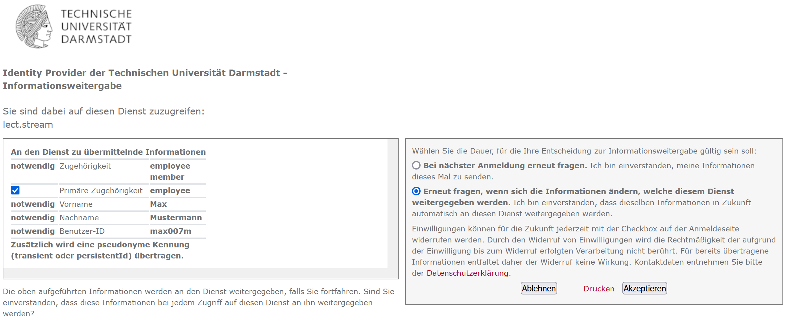Abbildung 2. InformationsweitergabeStimmen Sie der Informationsweitergabe zu, so klicken Sie auf den Button Akzeptieren. Sie werden auf die Seite mit allen verfügbaren Kursen weitergeleitet.
| Klicken Sie auf Ablehnen, dann ist das Anmelden auf der Webseite nicht möglich. Als Dozent/in können Sie keine Kurse anbieten. Als Teilnehmer/in können Sie an Kursen nicht teilnehmen. |
Teilnehmer/innen
Teilnehmer/innen können keine Kurse anbieten. Sie nehmen passiv an Kursen teil, können aber auch ggf. aktiv mit Dozenten/innen interagieren, wenn Interaktionsfunktionen aktiviert wurden. Sie können andere Teilnehmer/innen in der Kursgruppe nicht beeinträchtigen. Im Folgenden wird gezeigt, wie Sie an Kursen teilnehmen.
|
Um gestreamte Kurse ansehen zu können, müssen Sie Netzzugang zum Datennetz der TU Darmstadt haben. Alle TU-Angehörigen haben folgende Optionen zum Netzzugang:
|
Hauptseite
Im aktuellen Entwicklungsstand ist die Seite (Abbildung 3) schlicht gehalten. Diese besteht im Wesentlichen aus zwei Bereichen, der Navigationsleiste und dem Bereich für den Inhalt des jeweils angesteuerten Links aus der Navigationsleiste.
Als Teilnehmer/in können Sie:
-
Alle angebotenen Kurse sehen.
-
An einem Kurs teilnehmen.
-
Einstellungen vornehmen.
Zu jedem Kurs werden Indikator-Icons angezeigt, je nachdem wie sich der aktuelle Status des Kurses ändert.
|
Der Kurs hat begonnen und wird übertragen. |
|
|
Textnachrichten sind für den Kurs aktiviert. |
|
|
Ein Quiz wurde gestellt. |
Am Kurs teilnehmen
Um an einem Kurs teilzunehmen, klicken Sie in der Kursliste auf diesen Kurs. Je nach Zustand des Kurses, ob der Kurs begonnen hat oder nicht, bekommen Sie entweder den Kurs samt Medien oder eine Meldung über den nicht verfügbaren Kurs angezeigt.
Nicht begonnene Kurse
Wenn Sie wissen, dass bald ein Kurs losgeht, dann können Sie auch diesen Kurs auswählen und bekommen dann automatisch den Kurs angezeigt, sobald dieser von Dozenten/innen gestartet wurde. Sie bekommen zunächst die Meldung in Abbildung 4 angezeigt.
Oberfläche
Eine Übersicht über die Oberfläche eines laufenden Kurses ist in Abbildung 5 gegeben. Die Oberfläche besteht aus drei Bereichen: Dem Präsentationsbereich für Folien samt Annotationen und Steuerelementen für die Medien, der Medienleiste rechts für die eingeschalteten Webcams sowie einem Eingabefeld für Textnachrichten und dem Bereich für die Beschreibung des Kurses ganz unten.
-
Der Präsentationsbereich füllt den freien Platz in der Oberfläche. Hier werden die präsentierten Folien gezeigt.
-
Die Steuerleiste enthält Bedienelemente für den laufenden Kurs.

Audio-Wiedergabe stumm schalten. Mit dem Regler daneben kann die Lautstärke der Wiedergabe angepasst werden.
Hiermit können Sie sich melden. Diese Funktion wird in Abschnitt Sich melden näher beschrieben.
Ein Quiz ist aktiv und kann durch einen Klick auf diesen Button angezeigt werden.
Chateingabe ein-/ausblenden.
Einstellungen für Mikrofon und Kamera vornehmen.
In den Vollbildmodus wechseln.
-
Zeigt das Kamerabild von Dozierenden. Das Bild ist nur zu sehen, wenn das Kamerabild tatsächlich übertragen wird. Bei ausgeschalteter Kamera wird dieses Element ausgeblendet.
-
Zeigt das Kamerabild von Teilnehmenden während eines Redebeitrags. Das Bild ist nur zu sehen, wenn der/die Teilnehmende die Kamera für den Redebeitrag aktiviert hat.
Teilnehmende, die den Redebeitrag führen, sehen hier ihr lokales Kamerabild.
-
Mit dem Eingabefeld für Textnachrichten können Sie Dozierenden Textnachrichten senden. Alle anderen Teilnehmer/innen können Ihre Nachricht nicht sehen. Dieses Eingabefeld ist nur sichtbar, wenn Dozierende diese Funktion aktiviert haben.
Automatische Wiedergabe von Medien
Browser (insbesondere Chromium-basierte Browser) können die automatische Wiedergabe von Audio und Video blockieren. In diesem Fall können Sie zwar die Folien sehen, aber den Ton sowie das Kamerabild von Dozierenden nicht hören bzw. sehen. Hierbei ist eine Interaktion mit dem Browser erforderlich.
In diesem Fall wird ein Dialog (Abbildung 6) angezeigt, um die Wiedergabe von Audio und Video des Dozierenden zu aktivieren.
Firefox
In Firefox kann eine Berechtigung für die automatische Wiedergabe von Medien erteilt werden. Navigieren Sie hierzu in die Adresszeile des Browsers und erteilen die Erlaubnis, siehe Abbildung 7.
Textnachrichten
Mit den Textnachrichten können Sie Fragen stellen, ohne Dozenten/innen in ihrem Vortrag zu unterbrechen. Navigieren Sie dazu in das Nachrichtenfeld [5], geben dann Ihre Frage ein und klicken auf Senden.
| Bei Veranstaltungen mit vielen Teilnehmern kann der Chat schnell unübersichtlich werden. Hier ist Disziplin von allen Teilnehmern gefragt. Nutzen Sie die Textnachrichten daher nur nach Aufforderung der Dozenten/innen oder gemäß den für die Veranstaltung geltenden Kommunikationsregeln. |
Am Quiz teilnehmen
Ein Quiz kann mit oder ohne einen laufenden Stream zum Kurs gestellt werden. Wird ein Quiz ohne einen gerade laufenden Stream gestellt, so wird das Quiz anstelle des Streams auf der Webseite angezeigt. Wenn ein Stream zum Kurs läuft, und ein Quiz gestellt wird, dann bekommen Sie einen zusätzlichen Button in der Steuerleiste zu sehen (Abbildung 8). Klicken Sie auf diesen Button, um das Quiz zu öffnen.
Die Oberfläche eines Quiz ist in Abbildung 9 zu sehen. Es handelt sich hierbei um ein Beispiel.
Wählen Sie die Antwortmöglichkeiten aus und klicken auf Senden, um die Antwort einzureichen.
Sich melden
Als Teilnehmer/in können Sie sich zu Wort melden. Die folgenden Schritte erläutern den Ablauf eines Redebeitrags.
-
Klicken Sie in der Steuerleiste auf den Button .
-
Wenn Sie sich zum ersten Mal für einen Redebeitrag melden, werden Sie aufgefordert, Ihrem Browser die Erlaubnis zur Verwendung des Mikrofons und optional der Kamera zu erteilen. Der Browser zeigt Ihnen einen Dialog, der nach der Kamera- und Mikrofonberechtigung fragt (Abbildung 10). Hier stehen alle verfügbaren Kameras und Mikrofone zur Auswahl.
Abbildung 10. Kamera- und Mikrofonberechtigungen für BrowserWählen Sie das Mikrofon und die Kamera aus, welche Sie für den Redebeitrag verwenden möchten. Klicken Sie dann auf Erlauben.
-
Anschließend bekommen Sie den Dialog für Geräteeinstellungen (Abbildung 11) angezeigt. In diesem Dialog können Sie nochmal Ihr gewünschtes Eingabegerät auswählen und überprüfen, ob es richtig funktioniert.
Abbildung 11. Geräteeinstellungen für RedebeitragAnschließend klicken Sie auf Starten.
Sie können Ihre Meldung auch Abbrechen.
-
Ihre Meldung wurde erfolgreich an den/die Dozenten/in gesendet. Dozierende entscheiden, wann und ob sie die Meldung annehmen.
-
Wurde Ihre Meldung angenommen, so werden Sie nochmal gefragt, ob der Redebeitrag nun beginnen kann (Abbildung 12).
Abbildung 12. Redebeitrag bestätigenFalls Sie es sich anders überlegt haben und die Meldung zurückziehen möchten, dann klicken Sie auf Abbrechen.
Um den Redebeitrag zu beginnen, klicken Sie auf Starten.
-
Sie können jetzt sprechen. Dozierende und alle Teilnehmer/innen können Sie hören und sehen, wenn die Kamera aktiviert wurde.
-
Den Redebeitrag beenden Sie durch erneutes Betätigen des Buttons .
Einstellungen
Unter Einstellungen können Sie im aktuellen Entwicklungsstand das Medienprofil auswählen und Geräteeinstellungen vornehmen.
Medienprofil
Das Medienprofil bietet zwei Optionen an. Je nach Auswahl, ändert sich die Benutzeroberfläche des besuchten Kurses.
Zu Hause
Die Oberfläche bietet alle zur Verfügung stehenden Funktionen wie Ansicht der präsentierten Folien, Wiedergabe von Ton und Kamerabild der vortragenden Person sowie Versenden von Nachrichten und Teilnahme an Umfragen an.
Hörsaal
Die Oberfläche erlaubt nur das Versenden von Nachrichten und die Teilnahme an Umfragen. Diese Option ist insbesondere dann zu aktivieren, wenn Sie den Vortrag in Präsenz im Hörsaal sehen.
Geräteeinstellungen
Diese Einstellungen (Abbildung 13) können Sie zum Beispiel nutzen, wenn Sie sich das erste Mal angemeldet haben und die Meldefunktion nutzen möchten. So können Kamera und Mikrofon vorab konfiguriert werden.
Haben Sie zuvor der Nutzung der Kamera zugestimmt und möchten diese nicht mehr aktiviert haben, so können Sie hier die Nutzung der Kamera deaktivieren, ohne in die Browsereinstellungen zu wechseln. Wählen Sie hierzu in der Kameraauswahl Keine aus.
In Chromium-basierten Browsern (z.B. Google Chrome, Opera, Microsoft Edge,…) kann das Audio-Ausgabegerät eingestellt werden. Browser wie z.B. Firefox unterstützen diese Einstellungsmöglichkeit noch nicht.
-
Hier ist das Kamerabild der ausgewählten Kamera zu sehen.
-
Hier kann das ausgewählte Mikrofon durch eine kurze lokale Aufzeichnung getestet werden, indem Sie kurz reinsprechen und danach die Aufnahme wiedergeben. Auf diese Weise kann festgestellt werden, ob das Mikrofon richtig funktioniert und der Aufnahmepegel akzeptabel ist.
-
Zeigt den sich verändernden Eingangs-Pegel des ausgewählten Mikrofons an. Hiermit können Sie die Mikrofon-Lautstärke überprüfen.
Dozenten/innen
Um einen Kurs mit lecturePresenter streamen zu können, müssen Sie einen Kurs erstellt haben. Es können auch mehrere Kurse erstellt werden, wenn Sie mehrere Lehrveranstaltungen anbieten. Des Weiteren muss ein Zugriffstoken generiert werden, der Ihre lecturePresenter-Instanz gegenüber dem Streamingdienst authentifiziert. Wie Sie das bewältigen wird im Folgenden erklärt.
Kurs erstellen
Ein Kurs kann in wenigen Schritten erstellt werden.
-
Klicken Sie in der Navigationsleiste auf Kurs hinzufügen.
-
Füllen Sie die Felder mit ihren kursspezifischen Inhalten aus.
-
Anschließend klicken Sie auf Erstellen.
Kursrollen
Für Kurse gibt es drei Rollen, nämlich Organisator:in, Co-Organisator:in und Teilnehmer:in. Die Rollen sind hierarchisch geordnet und können im Kurs dynamisch zugewiesen werden. Jede Rolle erfüllt spezielle Aufgaben und ist mit den entsprechenden Fähigkeiten verknüpft. Jeder Rolle können Privilegien zugewiesen und entzogen werden.
| Als Ersteller:in eines Kurses erhalten Sie automatisch alle existierenden Privilegien. Ihnen kann niemand Privilegien für Ihren eigenen Kurs nehmen. |
Organisator:in
Organisator:innen verfügen über umfassende Privilegien. Diese können administrative Funktionen wie zum Beispiel die Teilnehmerverwaltung übernehmen. Zu den wichtigsten Privilegien dieser Rolle gehören zum Beispiel:
-
Einstellungen des Kurses ändern
-
Rollen und Privilegien von Teilnehmern ändern
-
Kurs löschen
-
Kurs streamen
Co-Organisator:in
Co-Organisator:innen verfügen über eine Teilmenge der Privilegien von Organisator:innen. In der Regel nehmen Kursbetreuer diese Rolle ein. Diese können zum Beispiel selbst einen Vortrag für diesen Kurs streamen oder nehmen an dem Kurs teil und reagieren aktiv auf Chat-Nachrichten.
Teilnehmer:in
Die Rolle Teilnehmer:in besitzen alle Personen im Portal, sowohl Studierende als auch Lehrende und damit alle, die Ihren Kurs betreten. Weisen Sie hier die Privilegien so zu, um zu bestimmen, ob und wie Teilnehmende mit Ihnen und untereinander kommunizieren können. Zu den wichtigsten Privilegien dieser Rolle gehören beispielsweise:
-
Chat-Nachrichten lesen
-
Chat-Nachrichten an alle Teilnehmer:innen senden
-
Chat-Nachrichten an (Co)-Organisator:innen senden
-
Chat-Nachrichten an bestimmte Teilnehmer:innen senden
-
Teilnehmer:innen des Kurses sehen
-
An Quizzen teilnehmen
-
Redebeitrag durch Melden starten
|
Unidirektionale Kommunikation für Teilnehmende Falls Sie möchten, dass Teilnehmende nur Ihnen und Co-Organisator:innen Chat-Nachrichten senden und an Quizzen teilnehmen können, so weisen Sie die Privilegien wie in Abbildung 14 dargestellt zu.
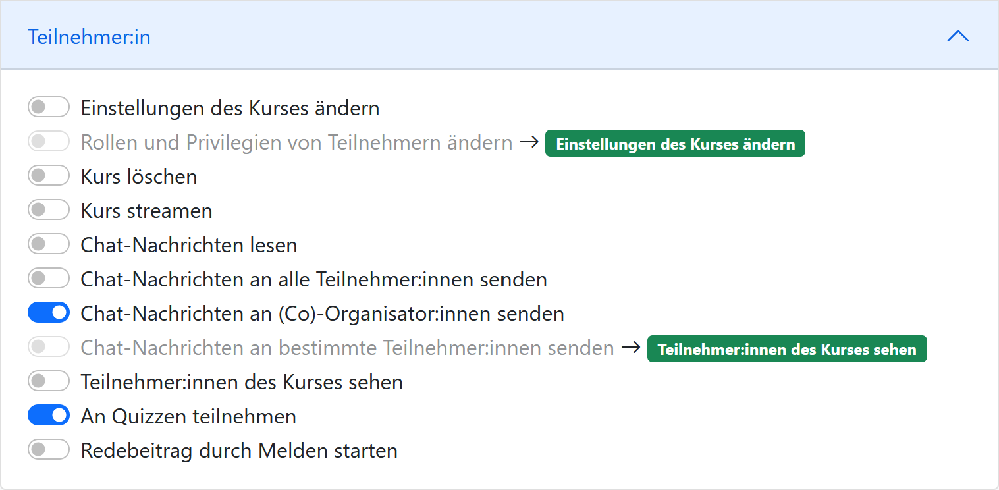
Abbildung 14. Privilegien für unidirektionale Kommunikation
|
Zusätzliche Kursrollen zuweisen
Sie können einzelnen Teilnehmenden zusätzliche Kursrollen zuweisen, um die Privilegien dieser Person zu erhöhen. Verwenden Sie dazu die in Abbildung 15 dargestellte Eingabemaske.
-
In das Feld Benutzername geben Sie die TU-ID des/der Angehörigen der TU Darmstadt ein.
-
Die zusätzliche Kursrolle auswählen. Momentan kann Organisator:in oder Co-Organisator:in ausgewählt werden.
-
Klicken Sie auf Hinzufügen.
Zugriffstoken
Das Zugriffstoken wird benötigt, um lecturePresenter gegenüber dem Streamingdienst zu authentifizieren. Es handelt sich hierbei um eine zufällig generierte Folge von alphanumerischen Zeichen. Einen Zugriffstoken zu verwenden hat den Vorteil, dass Sie sich im Werkzeug lecturePresenter nicht mit Ihren Logindaten (TU-ID und Passwort) einloggen müssen und somit auf sichere Weise geschützte Web-Dienste nutzen können. Das Zugriffstoken verwalten Sie mit folgenden Schritten.
-
Klicken Sie in der Navigationsleiste auf Einstellungen und dann weiter auf Persönliches Zugriffstoken.
-
Um ein neues Zugriffstoken zu generieren, klicken Sie auf Neues Token erzeugen.
-
Sie bekommen Ihr neues persönliches Zugriffstoken angezeigt. Bitte kopieren Sie dieses Token, denn es wird Ihnen nicht nochmal angezeigt.
Haben Sie das Zugriffstoken verloren, gelöscht oder haben Bedenken hinsichtlich der Verwendung, dann können Sie sich jederzeit ein neues Zugriffstoken generieren. Dabei wird das alte Zugriffstoken gelöscht und mit dem neuen überschrieben. -
Starten Sie lecturePresenter und öffnen die Einstellungen über das Menü .
-
Navigieren Sie in den Stream-Tab.
-
Das Zugriffstoken in das Textfeld unter
Zugriffstokeneinfügen.Um zu überprüfen, ob das Zugriffstoken funktioniert, klicken Sie auf den Button Prüfen. Gehen Sie hierbei auch sicher, dass Sie eine Internetverbindung haben. Wurde das Zugriffstoken akzeptiert, so nimmt das Textfeld die Farbe Grün an. -
Sie können die Einstellungen wieder mit dem Button Schließen verlassen und sind nun bereit einen Stream zu starten.
Wenn Sie Bedenken hinsichtlich der Verwendung des Zugriffstokens haben, können Sie das Zugriffstoken löschen.
lecturePresenter
Vorbereitung
Stellen Sie sicher, dass lectureStudio auf ihrem Gerät installiert ist. Anweisungen für die Installation finden Sie in Abschnitt 2 dieses Dokuments.
Erstellen Sie die Vorlesungsfolien in einem Programm ihrer Wahl. Um sie in lectureStudio verwenden zu können, müssen Sie die Folien als PDF exportieren. Es wird empfohlen, die Folien mit dem gleichen Seitenverhältnis anzulegen, mit dem sie auch präsentiert werden sollen.
PowerPoint-Präsentation in ein PDF umwandeln
Sollten Sie ihre Präsentation mit PowerPoint erstellt haben, dann haben Sie mehrere Möglichkeiten die PowerPoint-Folien in ein PDF umzuwandeln.
Hat ihre Präsentation einfache Animationen, dann bietet sich das Werkzeug PPspliT an. Dazu laden und installieren Sie die neueste Version von PPspliT. Um das Werkzeug zu verwenden, öffnen Sie die Präsentation mit PowerPoint und suchen in der Menü-Leiste nach PPspliT (Abbildung 16).

Sollten Sie kein PowerPoint haben, dann können Sie ihre Präsentation mit LibreOffice in ein PDF umwandeln. Laden und installieren Sie hierzu die neueste Version von LibreOffice. Als Nächstes öffnen Sie die Präsentation mit LibreOffice und wandeln diese über das Menü in PDF um.
Digitale Stifteingabe
lecturePresenter ist mit dem Ziel entwickelt worden, um mit einem digitalen Stift zu arbeiten. Die digitale Stifteingabe ist zum Beispiel mit Convertibles wie Microsoft Surface Pro oder Lenovo Yoga möglich. Es ist auch möglich ein zum PC zusätzliches Tablet wie HUION Kamvas mit Stift zu verwenden.
Vor der Präsentation
Mikrofon
Schließen Sie das zu verwendende Mikrofon an den Rechner an. Sie können ein externes Headset benutzen, oder – sofern vorhanden – die Hörsaal-Audio-Anlage mit dem Laptop verbinden. Viele Laptops besitzen auch ein eingebautes Mikrofon, es wird jedoch von seiner Verwendung abgeraten, da die Audioqualität für gewöhnlich zu wünschen übrig lässt – besonders, wenn sich der Vortragende vom Rechner entfernt.
Richten Sie nun das gewünschte Mikrofon ein (Abbildung 17):
-
Öffnen Sie die Einstellungen über das Menü .
-
Navigieren Sie zum Tab Mikrofon.
-
Wählen Sie das korrekte Mikrofon aus [1].
-
Mit dem Regler [2] können Sie die Lautstärke des Mikrofons anpassen.
-
Alternativ können Sie die Aufnahmelautstärke anpassen, indem Sie den Aufnahmepegel automatisch einstellen lassen [3].
Klicken Sie im Dialog (Abbildung 18) auf Beginnen und sprechen Sie eine Zeit lang in das ausgewählte Mikrofon. Nachdem Sie auf Fertig geklickt haben, wird die Mikrofonlautstärke auf den maximal erreichten Pegel eingestellt.
-
Machen Sie eine kurze Aufzeichnung [4] und überprüfen diese auf Rauschen, Nebengeräusche, Hall, usw.
-
Abschließend klicken Sie auf den Button Schließen, um die Einstellungen zu speichern.
Anzeigegeräte
Verbinden Sie den Videoausgang des Rechners mit dem Eingang des Anzeigegerätes, und vergewissern Sie sich, dass das Anzeigegerät eingeschaltet ist.
Sie können den aktuellen Projektionsmodus einsehen und ändern:
- Windows
-
Mit der Tastenkombination
 + P die Projektions-Seitenleiste öffnen.
+ P die Projektions-Seitenleiste öffnen.Achten Sie darauf, dass der Projektionsmodus auf “Erweitern” gestellt ist, nicht auf “Duplizieren”. - Linux (Ubuntu)
-
Öffnen Sie die Aktivitäten-Übersicht und tippen “Anzeige” ein, danach klicken Sie auf Anzeigegeräte.
Achten Sie darauf, dass in der Bildschirmkonfiguration die Option Bildschirm spiegeln nicht ausgewählt ist. Diese Schritte können sich in anderen Linux-Distributionen unterscheiden. - macOS
-
Über das Apple-Menü > Systemeinstellungen, und auf Displays klicken.
Achten Sie darauf, dass das Markierungsfeld Bildschirme synchronisieren nicht aktiviert ist.
Grundlagen des Arbeitsbereichs
Starten Sie lecturePresenter über das Startmenü oder den Desktop Shortcut. Sie werden dann mit dem Startbildschirm begrüßt. Hier können Sie entweder eine der zuletzt geöffneten Dateien laden, ein leeres Whiteboard öffnen, oder über den Button Dokument öffnen eine neue Datei auswählen.
Sobald Sie ein PDF-Dokument oder ein Whiteboard geöffnet haben, finden Sie die Benutzeroberfläche wie in Abbildung 20 dargestellt wieder.
Werkzeugleiste anpassen
Die Werkzeugleiste lässt sich Ihren Bedürfnissen nach anpassen. So können Sie zum Beispiel nur die Werkzeuge in der Leiste anzeigen lassen, die Sie tatsächlich brauchen und nutzen. Für eine bessere Übersicht und Struktur können drei verschiedene Abstandshalter zwischen den Werkzeug-Buttons eingefügt werden: Ein vertikaler und schmaler Abstandshalter, ein etwas breiter Abstandshalter mit fester Breite und ein dynamischer Abstandshalter, der den leeren Raum in der Leiste einnimmt und so die Buttons in die Ecken der Werkzeugleiste verschiebt.
Die Benutzeroberfläche zur Anpassung der Werkzeugleiste ist in Abbildung 21 zu sehen. Die einzelnen Buttons können aus dem Dialog in die Werkzeugleiste gezogen und an die gewünschte Position hinzugefügt werden. Um die Buttons aus der Werkzeugleiste zu entfernen, ziehen Sie den jeweiligen Button aus der Werkzeugleiste heraus und legen diesen irgendwo im Fenster ab.
Stream starten
Sofern Sie einen Kurs und Zugriffstoken auf der Webseite erstellt haben, können Sie mit dem Streamen loslegen. In lecturePresenter haben Sie zwei Möglichkeiten einen Stream zu starten.
-
Über das Menü .
-
Über die Werkzeugleiste mit dem Button .
Sobald Sie einen Stream starten, wird zunächst ein Dialog wie in Abbildung 22 gezeigt.
Abbildung 22. Stream starten -
In der Auswahlliste werden alle von Ihnen erstellten Kurse aufgelistet. Wählen Sie hier den Kurs aus, der zu Ihrem aktuellen Vortrag passt.
-
Sie haben hier noch die Möglichkeit die richtigen Ein- und Ausgabegeräte einzustellen und diese zu testen. Zudem haben Sie die Wahl, ob Sie den Kurs mit eingeschaltetem Mikrofon oder eingeschalteter Kamera beginnen möchten.
-
Die Einstellung des Lautsprechers ist nur dann relevant, wenn Sie Redebeiträge annehmen. Das Audio von Redebeiträgen wird dann auf dem ausgewählten Lautsprecher wiedergegeben.
Falls Sie den Empfang von unidirektionalen Textnachrichten für den Kurs einschalten möchten, dann aktivieren Sie die Option
Messenger.All diese Funktionen lassen sich auch während des laufenden Streams ein- und ausschalten. -
Um den Stream zu beginnen, klicken Sie auf Start.
Statusindikatoren
lecturePresenter hat in der rechten oberen Ecke der Oberfläche Indikatoren für den aktuellen Status des Streamings integriert (Abbildung 23).
|
|
Zeigt an, ob ein Quiz aktiv ist. Daneben wird die Anzahl der Antworten angezeigt. Ein Teilnehmer kann nur einmal am aktiven Quiz teilnehmen. |
|
Zeigt an, ob Textnachrichten aktiviert sind. Daneben wird die Anzahl unbearbeiteter Nachrichten angezeigt. Textnachrichten werden im Abschnitt Empfang von Nachrichten näher beschrieben. |
|
|
Zeigt die Anzahl offener Meldungen an. Die Abwicklung wird im Abschnitt Meldungen näher beschrieben. |
|
|
Zeigt an, ob ein Stream läuft und wie viele Teilnehmende sich den Stream anschauen. |
Quizze
Quiz erstellen
lecturePresenter erlaubt es Ihnen, während der Vorlesung in Echtzeit Quizze zu starten, an denen die Teilnehmer über einen Browser teilnehmen können. Um ein Quiz zu erstellen, müssen Sie dieses zunächst anlegen. Wählen Sie dazu den Menüpunkt Vortrag Quiz erstellen. Es öffnet sich eine Bedienoberfläche (Abbildung 24), über die Sie das Quiz erstellen.

Geben Sie eine Quizfrage ein [1]. Verschiedene Formatierungsmöglichkeiten sind in der Werkzeugleiste [2] zu finden. Die Quizfrage wird mit HTML formatiert. Auf diese Weise wird die Frage in allen Browsern mit der gleichen Formatierung angezeigt.
Wählen Sie den Quizstil [3] aus. Es stehen drei Stile zur Verfügung; Multiple choice (Mehrfachauswahl), Eine Antwort und Numerisch.
Multiple Choice und Eine Antwort
Die Antwortmöglichkeiten werden im Feld [4] als Text eingegeben. Neue Antwortmöglichkeiten erstellen Sie mit dem Button [5] oder mit der Taste Tab . Um eine Antwort zu löschen, klicken Sie den Button [6]. Mit den aufwärts und abwärts Buttons [7] können Sie die Reihenfolge der Antworten verändern.
Numerische Antworten
Für Fragen vom Stil Numerisch können Sie einen oder mehrere Einträge hinzufügen. Jede Antwortmöglichkeit (Abbildung 25) besitzt eine Beschreibung [1] und ein erlaubtes Werteintervall in Form von Min- und Max-Feldern[2][3], für die Eingabe bei der Teilnahme am Quiz. Numerische Antworten lassen sich ebenfalls sortieren und entfernen, wie im vorherigen Abschnitt beschrieben.
Nachdem Sie alles Gewünschte eingegeben haben, haben Sie die Möglichkeit das Quiz zu speichern, bevor Sie das Quiz freigeben. Zum Speichern drücken Sie den Button Quiz speichern. Um das Quiz freizugeben, klicken Sie Quiz stellen.
Sobald das Quiz erfolgreich freigegeben wurde, öffnet sich ein neues Dokument mit dem Namen Quiz und das Quiz ist jetzt für die Teilnehmer über einen Browser zugänglich. Das Quiz-Dokument wird in Echtzeit aktualisiert während die Antworten eintreffen. Um die Quizergebnisse anzuzeigen, wechseln sie auf die nächste Folie des Quiz-Dokuments.
Quiz aus der Quizsammlung auswählen
Um den Teilnehmern eine ihrer angelegten Fragen aus ihrer Quizsammlung zu stellen, wählen Sie den Menüpunkt . Es öffnet sich die Fragenliste, in der Sie bestehende Fragen bearbeiten, löschen oder stellen können. Wählen Sie die gewünschte Frage aus und klicken Quiz stellen.
Quiz-Modi
Ein Quiz kann mit oder ohne einen laufenden Stream gestellt werden. Wird ein Quiz ohne einen gerade laufenden Stream gestellt, so wird das Quiz anstelle des Streams auf der Webseite angezeigt. Ein aktives Quiz kann auf zwei Wegen beendet werden: Durch den Menüpunkt oder den Button Beenden unter den Vorschaufolien.
Stellen Sie ein Quiz während der Stream zum Vortrag läuft, so sehen Sie unter den Vorschaufolien einen zusätzlichen Button Teilen. Dieser Button ist dafür da, um die Quizergebnisse mit den Teilnehmern zu teilen. Denn die Teilnehmer können die Ergebnisse so lange nicht sehen, bis diese geteilt wurden. Die Ergebnisse können auch nur dann geteilt werden, wenn Sie das Quiz beenden.
Quizergebnisse können Sie mit folgenden Schritten den Teilnehmern präsentieren:
-
Das Quiz z.B. mit dem Button Beenden stoppen.
-
Die Folien mit Diagrammen, die alle Antworten zusammenfassen, auswählen und präsentieren.
Empfang von Nachrichten
Textnachrichten können empfangen werden, wenn die Funktion Messenger aktiviert wurde. Empfangene Nachrichten sind in lecturePresenter unter der Folienanzeige zu sehen (Abbildung 27). Eine Textnachricht enthält den Vor- und Nachnamen des/der Verfassenden, die Uhrzeit und den Text der Nachricht selbst.
Während eines Vortrags mit sehr vielen Teilnehmenden kann es vorkommen, dass Sie eine große Anzahl von Nachrichten bekommen. Wenn Sie auf eine Nachricht eingegangen sind oder eine Nachricht für unwichtig halten, dann kann diese mit dem Button entfernt werden.
Mit dem Button kann eine neue Folie mit dem Text der empfangenen Nachricht erstellt werden. Diese Folie wird in lecturePresenter sofort angezeigt, aufgezeichnet und im Stream verteilt, sofern Sie den Vortrag aufzeichnen bzw. streamen.
Meldungen
Meldungen sehen Sie dort, wo auch Textnachrichten in lecturePresenter angezeigt werden, unter der Folienanzeige (Abbildung 28). Eine Meldung enthält den Vor- und Nachnamen des/der Meldenden und die Uhrzeit. Sie können eine Meldung annehmen oder ablehnen  . In beiden Fällen wird die Meldung aus der Liste entfernt.
. In beiden Fällen wird die Meldung aus der Liste entfernt.
Haben Sie eine Meldung angenommen und der/die Meldende hat den Redebeitrag gestartet, dann sehen Sie in lecturePresenter rechts oben über der Folienvorschau den Namen und das Kamerabild, falls aktiviert, des/der Meldenden sowie Steuerelemente für den Redebeitrag. Zu diesem Zeitpunkt ist auch der/die Meldende für Sie und alle Teilnehmer/innen zu hören.
Audio und Video des Redebeitrags können Sie steuern.
|
|
Schaltet den Ton des/der Meldenden für Sie und alle Teilnehmer/innen stumm. Durch erneutes Betätigen kann der Ton wieder eingeschaltet werden. |
||
|
Schaltet das Kamerabild des/der Meldenden für Sie und alle Teilnehmer/innen stumm. Durch erneutes Betätigen kann das Kamerabild wieder eingeschaltet werden.
|
Der Redebeitrag wird beendet durch:
-
Klicken auf Beenden in der Steuerleiste.
-
Meldende selbst.
Bildschirmfreigabe
Mit lecturePresenter können Sie Ihren Bildschirm für andere Teilnehmer/innen teilen. Sie können Ihren gesamten Bildschirm oder nur bestimmte Fenster und Programme freigeben. Das ermöglicht Ihnen beispielsweise, eine Werkzeug-Demo vorzuführen. Hierfür gehen Sie wie folgt vor:
-
Falls der Button in der Werkzeugleiste nicht zu sehen ist, fügen Sie diesen, wie in Abschnitt Werkzeugleiste anpassen beschrieben ist, hinzu.
-
Starten Sie einen Stream, wie in Abschnitt Stream starten beschrieben.
-
Klicken Sie in der Werkzeugleiste auf .
-
Ihnen wird der Dialog für die Bildschirmfreigabe angezeigt. Ein beispielhafter Dialog ist in Abbildung 30 zu sehen.
-
Einen Bildschirm oder ein Fenster für die Freigabe auswählen und Start klicken.
-
Ein neues Dokument wird erstellt und geöffnet. Auf der ersten Folie des Dokuments wird ein Schnappschuss des freizugebenden Bildschirminhalts angezeigt (Abbildung 31). Dieses Dokument wird gleichzeitig an alle Teilnehmer/innen verteilt und bei allen Teilnehmenden angezeigt. Sie können in diesem Dokument auch alle Annotationswerkzeuge nutzen.
Zu diesem Zeitpunkt hat die Bildschirmfreigabe noch nicht begonnen! -
Die Bildschirmfreigabe beginnen Sie, indem Sie auf [1] klicken. Falls ein Fenster freigegeben wurde, wird dieses automatisch fokusiert und bei Ihnen auf dem Bildschirm in den Vordergrund gebracht.
-
Alle Teilnehmer/innen bekommen den freigegebenen Bildschirminhalt in Form von gestreamten Video angezeigt (Abbildung 32).
Bildschirmfreigabe pausieren
Die Bildschirmfreigabe lässt sich pausieren. Dies ist insbesondere dann hilfreich, wenn Sie einen Schnappschuss des freigegebenen Bildschirminhalts machen möchten, um den aktuellen Zustand der Freigabe auf einer Folie festzuhalten.
-
Hierfür klicken Sie auf [1].
-
Eine neue Folie wird mit einem neuen Schnappschuss des freigegebenen Bildschirminhalts im Dokument erstellt und ausgewählt. Diese neue Folie wird an alle Teilnehmenden verteilt und bei allen angezeigt.
Bildschirmfreigabe beenden
Um die Bildschirmfreigabe zu beenden, klicken Sie auf [2]. Das dazu erstellte Dokument wird geschlossen.
lectureEditor
Grundlagen des Arbeitsbereichs
Bearbeitungs-Funktionen
|
|
Zeigt Bedien- und Einstellungselemente an, um die Aufzeichnung in ein komprimiertes Format zu konvertieren. |
|
Zeigt Bedien- und Einstellungselemente für die Rauschunterdrückung an. |
|
|
Zeigt alle Annotationen zu der aktuell angezeigten Folie an. Über diese Ansicht können einzelne Annotationen aus der Folie entfernt werden. |
Folienvorschau
In diesem Bereich werden Miniaturbilder für die einzelnen aufgezeichneten Folien angezeigt. Die nächste Folie ist oben sichtbar. Um eine Folie auszuwählen, klicken Sie auf das jeweilige Miniaturbild. Beim Folienwechsel passt sich die Folienvorschau automatisch an und zeigt die nächsten Folien beginnend mit der darauffolgenden Folie von oben nach unten an. Sie haben auch die Möglichkeit die Aufzeichnung durchzublättern, indem Sie die Bildlaufleiste verwenden, um sich vorwärts und rückwärts durch die Aufzeichnung zu bewegen. Der blaue Rahmen um das Miniaturbild kennzeichnet die Folie, die gerade angezeigt wird.
Werkzeuge
|
Letzten Bearbeitungsschritt rückgängig machen. |
|
|
Gelöschten Bearbeitungsschritt wiederherstellen. |
|
|
Aktuellen Auswahlbereich entfernen. |
|
|
Lautstärke im Auswahlbereich anpassen. |
|
|
Aktuelle Folie entfernen. |
|
|
Aktuelle Folie durch eine andere ersetzen. |
|
|
Eine Aufzeichnung an die aktuelle Zeitmarker-Position importieren. |
|
|
In die Waveform reinzoomen. |
|
|
Aus der Waveform rauszoomen. |
|
|
Auswahlbereich zusammenführen. |
Annotationen
In der Annotationen-Leiste werden Markierungen für alle aufgezeichneten Seitenwechsel und Annotationen angezeigt. Die Markierungen passen sich automatisch an den Zeitabschnitt an, den Sie sich gerade anschauen, reinzoomen oder durchblättern. Die Seitenwechsel werden durch ein Rechteck mit der Seitennummer markiert. Alle Annotationen werden durch jeweils kleine rote Balken markiert. Folgen viele Annotationen, die zeitlich nah beieinander durchgeführt wurden, so kann es zu einem breiten roten Balken führen. Dies ist vor allem bei Stift-Annotationen der Fall, da jeder Punkt, den der Stift durchläuft, als eine einzelne Markierung zählt.
Schneiden
Um Stille, einen Fehler oder einen unnötigen Abschnitt aus der Aufnahme zu löschen, markieren Sie diesen Bereich in der Waveform mit den Zeitmarkern.
-
Navigieren Sie in der Waveform an die gewünschte Position.
-
Bewegen Sie den Zeitmarker oder die sekundären Zeitmarker nach links oder rechts, um den gewünschten Bereich auszuwählen.
Der ausgewählte Bereich ist vom grünen Rechteck umschlossen (Abbildung 35).
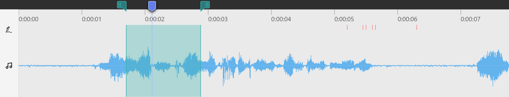Abbildung 35. Auswahlbereich -
Klicken Sie auf Ausschneiden über der Waveform.
Dadurch wird der Auswahlbereich entfernt. Alle darauffolgenden Folien samt Annotationen werden nach links verschoben, um die Lücke zu schließen.
Komplette Folie entfernen
Folien samt Annotationen lassen sich auch ohne die Auswahl mit Zeitmarkern in der Waveform entfernen.
-
Navigieren Sie auf eine Folie, die Sie komplett entfernen möchten.
-
Klicken Sie auf Aktuelle Seite entfernen über der Waveform.
Alternativ:
-
Rechtsklick mit der Maus auf die Folie in der Vorschauleiste (Abbildung 36).
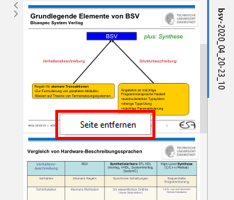Abbildung 36. Komplette Folie aus der Aufzeichnung entfernen -
Klicken Sie auf Seite entfernen im Kontextmenü.
Folie ersetzen
Sie können Folien im aufgezeichneten Dokument ersetzen. Diese Funktion ist hilfreich, wenn Sie eine Aufzeichnung wiederverwenden und zum Beispiel nur das Datum anpassen möchten, oder Fehler wie bei- spielsweise Rechtschreibfehler beheben möchten. Alle Annotationen und Audio, die auf dieser Folie gemacht wurden, bleiben unverändert erhalten.
-
Navigieren Sie auf eine Folie, die Sie ersetzen möchten.
-
Klicken Sie auf Aktuelle Seite ersetzen über der Waveform.
-
Im Datei-Auswahl-Dialog einen Foliensatz auswählen, in dem sich die neue Folie befindet.
-
Wählen Sie im Foliensatz die neue Folie aus und klicken Ersetzen.
-
Die ausgewählte Folie wurde ersetzt.
Lautstärke anpassen
Es kann vorkommen, dass Sie die Lautstärke in einzelnen Passagen ihrer Aufzeichnung verändern möchten. Dies kann zum Beispiel nach dem Einfügen einer neuen Passage der Fall sein.
-
Navigieren Sie in der Waveform an die gewünschte Position.
-
Bewegen Sie den Zeitmarker oder die sekundären Zeitmarker nach links oder rechts, um den gewünschten Bereich auszuwählen.
Der ausgewählte Bereich ist vom grünen Rechteck umschlossen (Abbildung 37).
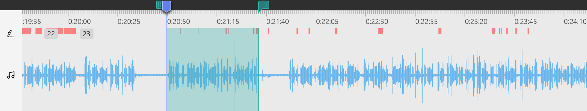Abbildung 37. Auswahlbereich zur Anpassung der Lautstärke -
Klicken Sie auf Lautstärke anpassen über der Waveform. Es wird ein neuer violetter Auswahlbereich für die Anpassung der Lautstärke erstellt.
-
Im violetten Auswahlbereich können Sie nun die Lautstärke anpassen (Abbildung 38). Bewegen Sie den horizontalen Balken nach oben, um die Lautstärke zu erhöhen, oder nach unten, um sie zu senken [1]. Die Änderung ist sofort in der Waveform sichtbar.
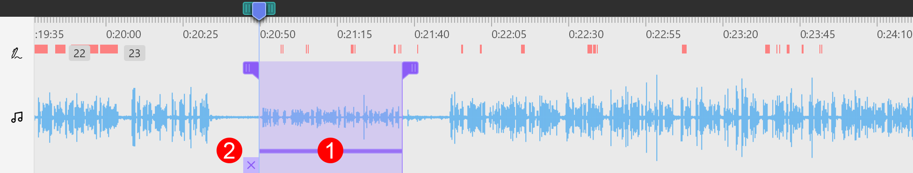Abbildung 38. Lautstärke anpassen im AuswahlbereichEs wird empfohlen den grünen Auswahlbereich mit zusammenzufalten. -
Sollten Sie es sich anders überlegt haben, so können Sie die Anpassung mit X [2] oder rückgängig machen.
Rauschunterdrückung
Je nach Qualität des Mikrofons, wird neben der Sprache auch Rauschen aufgezeichnet. Um die Sprachverständlichkeit zu erhöhen, kann ein Rauschunterdrückungsverfahren angewandt werden. Da statistische Rauschsignale sich im Allgemeinen nicht gut komprimieren lassen, führt die Rauschunterdrückung zu einer Reduktion der Dateigröße einer komprimierten Video-Aufzeichnung.
-
Wählen Sie in der Waveform mit den Zeitmarkern einen Bereich mit Stille aus, d.h. ohne Sprach-/Audiosignal. Die Pegel sind in der Waveform nahe der Mittellinie (Abbildung 39).
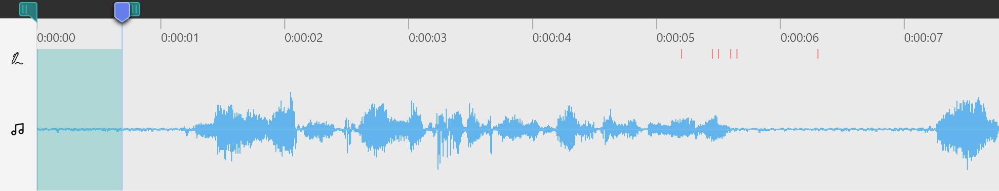Abbildung 39. Stille auswählen -
Über Menü wird das Rauschsignal analysiert.
-
Über Menü öffnen Sie den Dialog zur Rauschunterdrückung (Abbildung 40).
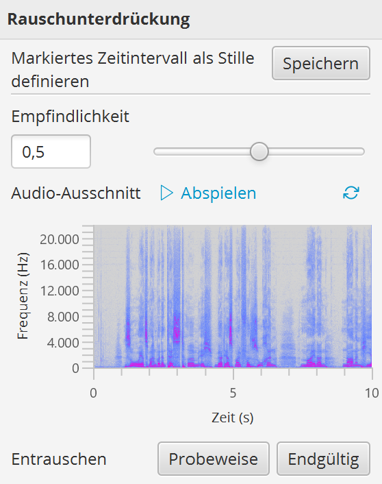Abbildung 40. Rauschunterdrückung -
Der Standardwert der Empfindlichkeit ist so eingestellt, dass er für die meisten Aufzeichnungen nicht verändert werden muss. Um sicherzugehen, ob die Empfindlichkeit der Rauschunterdrückung passt, führen Sie den nächsten Schritt aus.
Je höher der Wert, desto mehr Signale werden aus der Aufzeichnung entfernt. Ein zu hoher Wert beeinträchtigt die Qualität der Sprache, da auch hier die dazugehörenden Frequenzen unterdrückt werden. -
Sie können probeweise entrauschen und vorhören. Dazu klicken Sie zunächst Probeweise und dann .
Eine Veränderung des Spektrogramms ist in Abbildung 41 zu sehen. Es ist zu erkennen, dass hauptsächlich Frequenzen der Sprache übrig geblieben sind.
Wenn Sie mit dem Resultat nicht zufrieden sind, dann verstellen Sie die Empfindlichkeit und klicken erneut Probeweise.
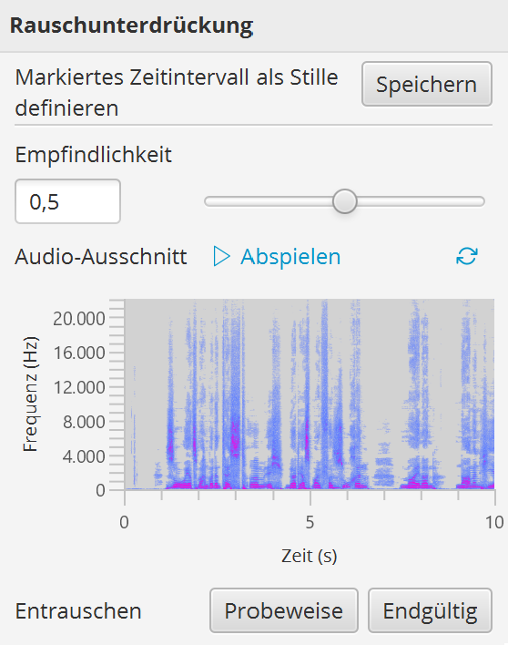Abbildung 41. Probeweise Rauschunterdrückung -
Damit die Rauschunterdrückung auf die gesamte Aufzeichnung angewandt wird, drücken Sie Endgültig.
Der Dialog schließt sich automatisch, nachdem die Rauschunterdrückung erfolgreich durchgelaufen ist.
Video-Export
Exportieren Sie Ihre Aufzeichnung als komprimiertes Video, das in allen gängigen Videoplayern wiedergegeben werden kann.
-
Klicken Sie auf Erstellen im Schnellzugriff für den Video-Export. Es öffnet sich ein Dialog (Abbildung 42).
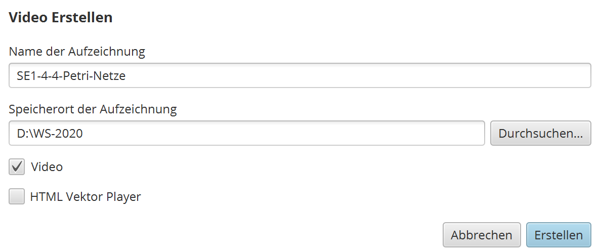Abbildung 42. Video-Export -
Wählen Sie den Speicherort aus.
-
Aktivieren Sie die Option Video, um im nächsten Schritt die Videodatei zu erstellen. Zu dem Video wird eine HTML-Datei mit erweiterten Funktionen wie die Textsuche und Anspringen von Folien im Video generiert.
Die HTML-Datei kann mit dem Video auf den Helios Medienserver der TU Darmstadt geladen und freigegeben werden. Die HTML-Darstellung einer beispielhaften Aufzeichnung ist in Abbildung 43 zu sehen.
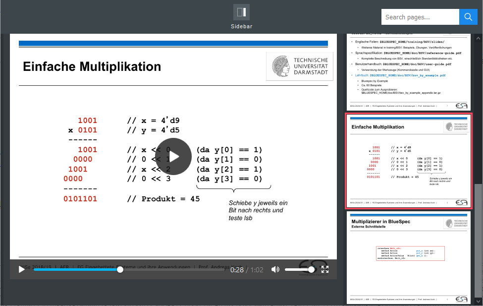Abbildung 43. Video-Export mit HTML-Format -
Aktivieren Sie die Option HTML Vektor Player, wenn zu dem Video eine komprimierte Aufzeichnung im Vektorformat erstellt werden soll. Die damit erzeugte Aufzeichnungsdatei kann über die mitgelieferte HTML-Datei wiedergegeben werden.
In der Regel haben komprimierte Vektor-Aufzeichnungen eine geringere Dateigröße als komprimierte Videos, haben aber den Nachteil, dass sie nur mit der HTML-Datei, die die Wiedergabe-Funktionalität implementiert, wiedergegeben werden können. -
Klicken Sie auf Erstellen.
Alternativ mit Experteneinstellungen
-
Um mehr Einfluss auf die Qualität des Videos zu bekommen, klicken Sie auf die Reiter Video und/oder Audio. Sie bekommen die erweiterten Bedienelemente (Abbildung 44) zu sehen.
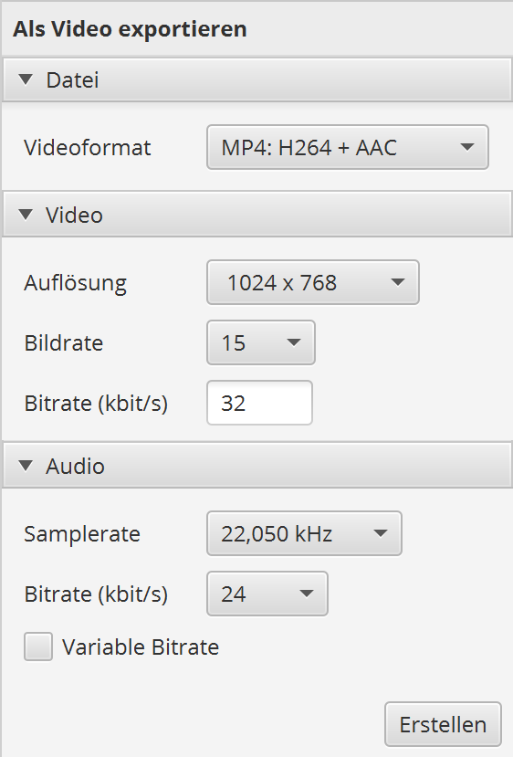Abbildung 44. Erweiterte Video-Export-Einstellungen -
Nehmen Sie die gewünschten Einstellungen vor. Die Standardwerte sind so eingestellt, dass ein Video mit guter Qualität und geringer Dateigröße erstellt wird.
Je höher die Werte, desto besser ist die Qualität des Videos. Mit besserer Qualität erhöht sich auch die Dateigröße des Videos. -
Anschließend klicken Sie auf Erstellen und fahren mit den zuvor beschriebenen Schritten in Absatz Video-Export fort.
Tastenbelegung
-
lectureEditor-Tastenbelegung
| Tasten | Aktion |
|---|---|
Strg+O, |
Aufzeichnung öffnen. |
Strg+F4 |
Aufzeichnung schließen. |
Strg+Q |
Programm beenden. |
Alt+Enter |
Vollbildmodus umschalten. |
Strg+Z |
Letzten Bearbeitungsschritt rückgängig machen. |
Strg+Y |
Gelöschten Bearbeitungsschritt wiederherstellen. |
Strg+X |
Aktuellen Auswahlbereich entfernen. |
Strg+D |
Aktuelle Folie entfernen. |